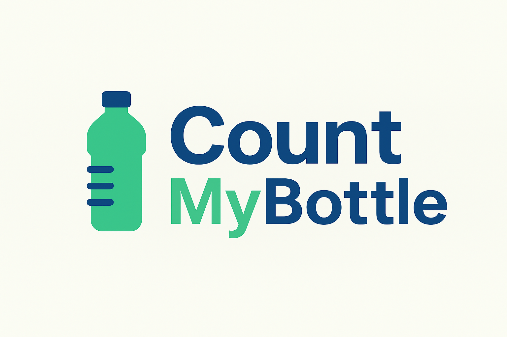
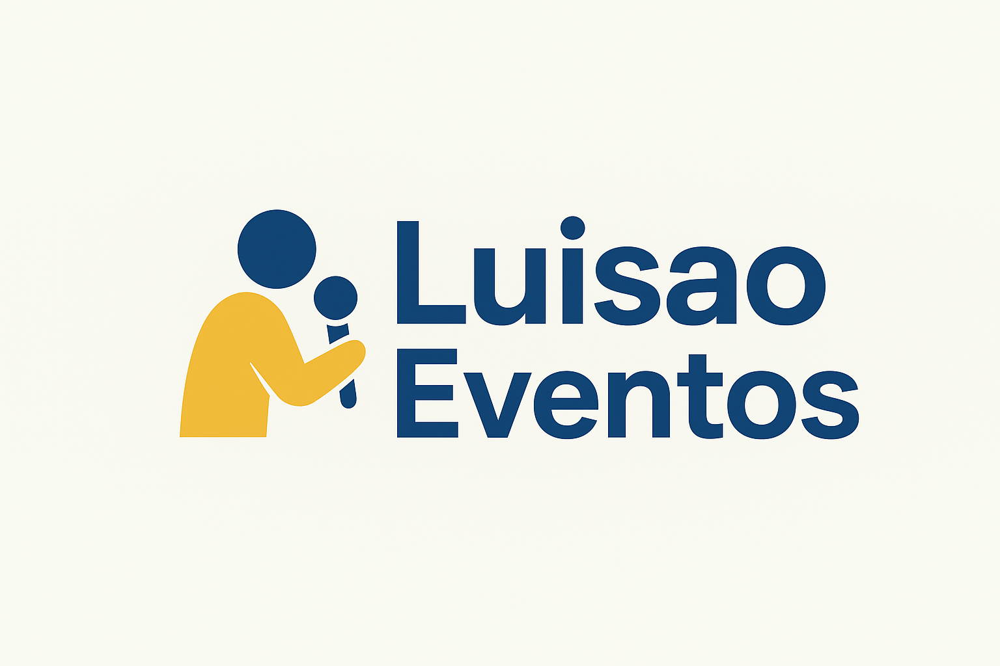
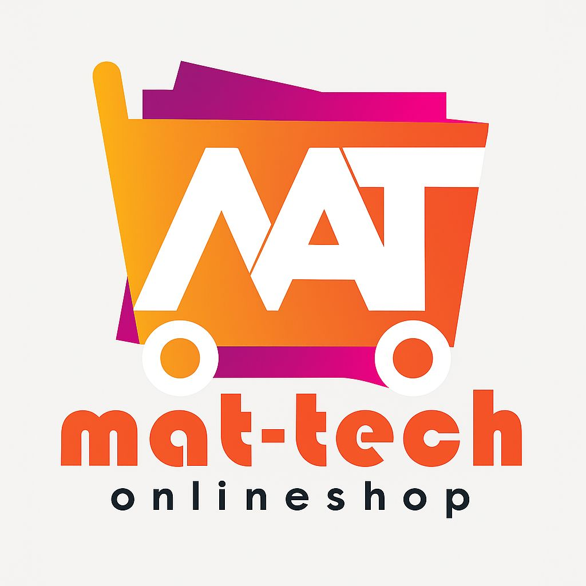

Mis Proyectos
A lo largo de mi carrera en Negocios Digitales, he desarrollado distintos proyectos enfocados en tecnología, sostenibilidad y emprendimiento. Cada uno representa una etapa importante de mi aprendizaje y crecimiento profesional.
CountMyBottle
CountMyBottle es un sistema digital diseñado para registrar y contabilizar botellas recicladas. El objetivo es optimizar el tiempo, reducir errores y mejorar el control del reciclaje dentro de la comunidad. Este proyecto fue desarrollado junto con mis compañeros Diego, Mateo, Kevin y Javier, integrando tecnología con conciencia ambiental.
Luao Eventos
Luao Eventos es una empresa ficticia enfocada en la organización de eventos con discomóvil y gastronomía. En este proyecto me encargo de la publicidad digital y la gestión de ventas para fortalecer el crecimiento del negocio familiar, creando experiencias únicas en cada celebración.
Mattech
Mattech es mi página de tecnología donde ofrezco productos innovadores como el dispositivo Alaxe, un asistente inteligente similar a Alexa. Realizo ventas contraentrega, publicidad en redes sociales y promoción digital del catálogo tecnológico, fomentando el emprendimiento en el ámbito digital.